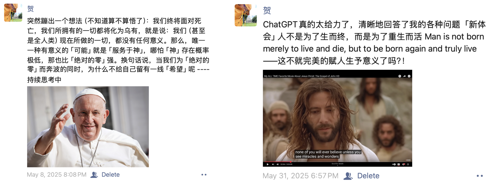

第一章 思考人生
宇宙是被创造出来的吗？YZN：类似麦克风这种简单的东西，都需要由人靠自主意识去创造，不可能是由自然界中的各种元素在数亿年内无意识的碰撞和化学物理反应后偶然诞生。对于生命，即使一个微小的细菌都比麦克风复杂的多，更何况是人类这样拥有智慧的生物。
面对死亡，中西方文化有很大区别。在西方国家（面积和人数都远大于中方），很多人相信死亡不是生命的终结，而是一段旅程的结束、另一段旅程的开始。每个人都是向死而生的，这里并非指人们一步一步走向死亡，而是死亡已经存在于“走向”这个过程中。
再过50年，我们80后就收队了。还依稀记得：我们是社会主义接班人；小太阳一样的存在。转眼间，已经两鬓斑白，甚至不记得儿时在几班上学——细思极恐：似乎自己并未存在过（这可能就是所谓的向死而生吧？）就像我们不知道自己的祖辈是谁，我们的后代也不会记得我们是谁。
注：对人生的过度思考会让人遁入虚无!
第二章 四十不惑
ZH：年轻时所有的目标，其实只规划到了40岁。40岁之前该实现的都实现了；实现不了的，自己也明白这辈子没戏了。工作中，自己的事业，要么成了高管（教授）基本达到了天花板；要么过了最佳上升期（评帽子的年龄）；想跳槽，高级职位（985）没机遇。生活中，人生所有的福利期已经结束，剩下的事没完没了的责任。身体上，也是一年不如一年。四十岁，是时候与自己和解了。
第三章 使命与生活
最近时常被问到：你的使命就是“帽子”吗？我想说的是：对于一个积极上进的学者，当下除了帽子还有什么使命呢？有了帽子，就有项目；有了项目，就有团队；有了项目和团队，就可以实现更大的价值，获得更多的名与利。没有帽子，就没有（大）项目；就没有（大）团队；随着年龄的增加，必然会逐渐掉队。甚至，在当下，没有帽子，教学，这个本职工作，都难有成就。踏踏实实、兢兢业业，更多意味着沉沦。
得到（帽子），自然可以顺势而为（但也是一条不归路）。得不到，就要努力思考去化解、去和解，做一个高水平阿Q。
听说我选择MIT，绝大多数人的反应是：这是一个追求上进、有学术抱负的人！好朋友会送上祝福：期待更上一层楼，取得更大成就与突破。而我想的是：大家可能真的是被严重洗脑了。我想狠狠的问一句：为什么要追求卓越？对于被成功洗脑的我们，满脑子都是进步与突破，信奉着一寸光阴一寸金而不敢驻足片刻。快也好，慢也罢，殊途同归，并不会带走任何一片云彩。
随着物质条件的丰富，摆在很多国人面前的难题可能不再是“如何进步”。我们反而需要好好学习：如何生活，平静的生活！好像一个人坐在湖边的长椅，看着如镜的水面，用心去感受每一次呼吸与心跳。
第四章 人生宽度
人生上半场，终于BJUT正教授，算是一个圆满的句号。我对人生和这个世界的深度探索也就到这里了：结识了很多顶尖学者，接触了很多高端人物，了解了很多（光鲜的）台前（脏脏的）幕后。可以不遗憾了。前一段时间，听说国内的朋友在开会的时候还蛮想念我……一种自己挂了并在另一个世界看着大家的即视感。
就连我自己都有些没想到的是：我这么轻易的、眼都没眨的就放弃了终身的正教授、当下甚是抢手的铁饭碗、已经交了12年的社保/医保。要知道，躺平的正教授是相当舒服的：评评项目、逼逼学生，带带孩子、玩玩山水、吹吹牛逼～～
对于下半场，我想探索一下人生的宽度，多看看这个世界，多了解这个世界。去结识顶尖如MIT的Nerd，去感受自由如漂亮国的多元，去看看绚烂如文艺复兴的文化……
所谓舍得，有舍才有得，不舍怎能得！？共勉之。
第五章 麻省理工
我红了，因为有人认真的炒作了一下从副院长到博士后的巨变。也许本意不坏，但这真的是故意且俗不可耐。故意：编造一个“博士后”（我在MIT并不是博士后）的落差，以吸引眼球。俗不可耐：官本位的回避对于学者最重要的“教授”职称，反而去突出副院长（我不做副院长好几年了），应该是骨子里觉得当官比教授重要吧。所谓：书中自有黄金屋/颜如玉。其实，现在什么职位对我来说真的不重要，即使只给我博士后也会欣然接受；并且，目前也没有转去做Faculty的欲望（当然了，钱多点，就更好了）。我的目标很明确：好好生活、体验人生！
估计绝不会有人想到：MIT都非我首选。简言之：先选波士顿，然东北交通没位置，MIT恰好要我，遂来之。
最后，
人生苦短，沧海一粟。
用心体会，顺其自然。
遗 嘱
大概是自从有了夏洛特，坐飞机多少会有些紧张。不是因为怕死，更多是担心未能和她说上最后一句话。所以，还是早早写下来，免得天有不测风云。
尽管还在不断演化，但就我目前的思想阶段来看，我认为我们不应该为至亲的离去而悲伤，或者说过分悲伤[1]——这么说似乎更好接受一些。伤感可以有，毕竟是人生的重大损失，但没必要过分伤心，因为这是人生旅途的必然结局，每个人都会走到那一天。对于一个确定性的结果，何必去悲伤呢？
如果只关注身边的你我，这可能是件大事。但若是放眼宇宙，你我甚至是全人类都渺小可怕：
空间维度上，可观测宇宙无比浩瀚，其半径为46,500,000,000光年。相比之下，地球的半斤仅为 0.000000000673 光年，其渺小无法用言语概括。
由于人类本身相对于地球的渺小，我们对宇宙与地球在空间上的巨大差距可能感受并不明显。倘若将时间维度考虑进来，人类社会的渺小则更为突出：目前宇宙的历史约为13,800,000,000年，人类的出现仅区区5000年，一个人的生命更是短暂到80年。
在巨大的时空差距下，全人类全地球的发展过程都不值一提[2]，何况一个人的来与去。因此，完全没有必要太过悲伤。我的来，我的走，都是一个自然过程。你来了，也会走。我们殊途同归，这是必然结果，没有必要为一件必然的事儿而难受。
在如此悬殊的时空关下，信仰似乎是我们唯一的出路[3]。对于我，随着年龄的增加，对人生的思考愈加增多。这里大概有几个重要阶段：
萌芽。2010年在亚特兰大短暂的学习了圣经，了解了很多基础知识，尽管仍无法相信，但就像他们说的那样：在水泥地上播种，当条件成熟时，种子仍可能发芽。
发展。2023年又回到了这片土壤，又继续了原有的思考——这次主要是因为年纪增长更多是自发的。有几个经历对我影响较大：
抖音里刷到的宇宙时空观（如上所述）——这极大地激发了我对人类终极问题“我是谁”“世界是什么”等的思考；
教皇保罗的去世[4]：激发了我基于概率的思想进步：不信为0，信，哪怕概率再小也大于0；
圣经中关于此生意义的启示[5]：人生可能只是一场彩排，来生才是真正的演出。
所以，人死并不可怕，在死后的几百年几千年甚至几亿年内确实是消失了，但这又何妨呢：在我们出现之前，宇宙已经存在了13,800,000,000年，而你我并没有感受到任何的漫长。同样，在没有意识的状态下，再漫长的时光也不是问题。但如果有来生[6]，我们终将团聚，你感觉到的慢，其实只在你比我多活的几十年而已。
对于人生过程来说，总是要经历一些起伏[7]，爱自己、好好活着才是核心！同时，不妨去寻找自己的信仰，为心找到归宿，为来生买份保险。
写下这些话，我坐飞机应该就不会紧张了，嘿嘿
-----------------------------------
[1] 在我24岁的时候，我妈去世了，我是哭得死去活来的～～ 但如果发生在今天，我想应该不会到达那个程度了
[2] 之前一直很喜欢“沧海一粟”这个词。后来发现，我们过于乐观了
[3] 信仰之路人各不同，有些人生来就有这坚定的来生使命，有些人终其一生也仅仅停留在此生。我自认为自己的路还是深思熟虑的结果，是踏实的
[4] 下图左
[5] 下图右
[6] 目前我还未能坚定的把这个概率问题转化成确定性问题，所以还在探索中
[7] 由于小时候学习压力还是很大的，加上长大后实际的人生也是起起伏伏，我一直认为人生是一个起起伏伏的状态，所谓悲喜交加。但是来到美国之后，看到很多外国人都（至少看似）傻傻的、无忧无虑的活着，让我怀疑：人的一生是否真的可以没有那么多苦痛
